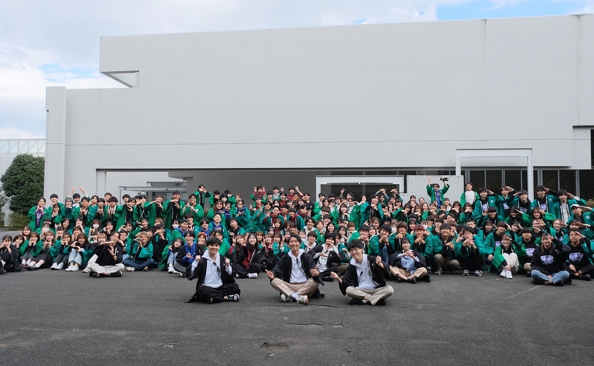

早稲田大学 人間科学部 健康福祉科学科 3年
森田裕介教授の情報メディア教育論ゼミに所属しています。
ゼミホームページ: https://discover.w.waseda.jp/seminar/morita/
早稲田大学所沢キャンパス祭の企画開発局に所属していました。
所祭ホームページ: https://tokosai.net/
IT企業の長期インターンシップでサービスマニュアル記事作成やデータ分析に取り組み、
柔軟に対応する力や顧客に寄り添う姿勢を学びました。
趣味は、映画鑑賞です。年間に100本以上見るほど、楽しんでいます。